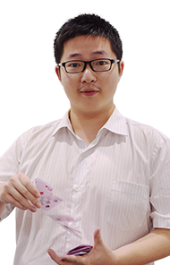
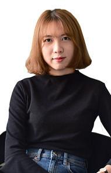

Paul
文书顾问
华盛顿大学圣路易斯分校
历史、日语、中欧研究
Paul出生在英国伦敦的一个军人之家。早年他游遍全美，并曾在华盛顿特区和檀香山定居。 Paul曾经在日本京都学习一年，研究日本人偶的制作技术并且品尝了大量中式点心。在兴趣的指引下，他之后又攻读了欧亚问题研究的硕士学位，并主要研究了古丝绸之路沿线的国家。为此，他辗转德国，印度，尼泊尔以及土耳其等世界各地。业余生活里，Paul热衷于舞蹈，擅长古巴双人舞中的casino和son风格。除此之外，Paul热爱旅游， 烹饪，烘培咖啡以及阅读经典名著。
Jsn |
Fei |
Yvn |
Paul |
Richard |

Huadi |
Emily |
Shirley |
Yanyan |

James |
Annie |
Lan |
Jad |
Adam |
Stefan |
Stephen |
Jessica |
Joy |
Anita |
Eli |
Max |
Xiaojun |
Lee |

Yanni |
Yin |
Spencer |
Mia |
Aaron |
Situ |
Butters |
Bingley |
Hannah |